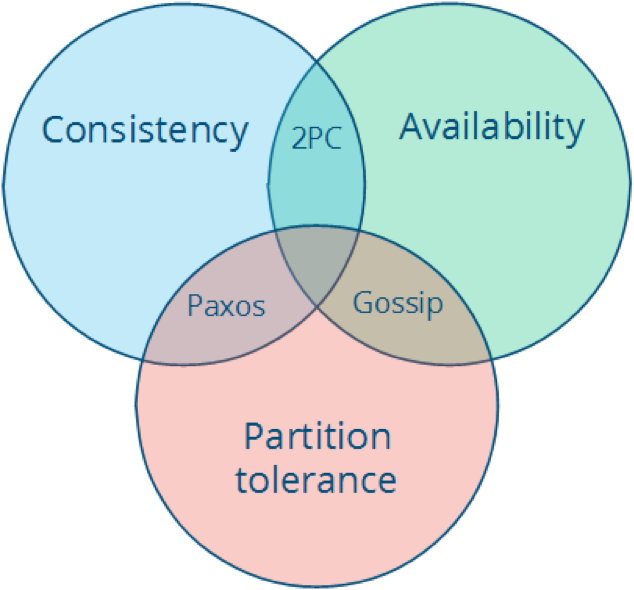
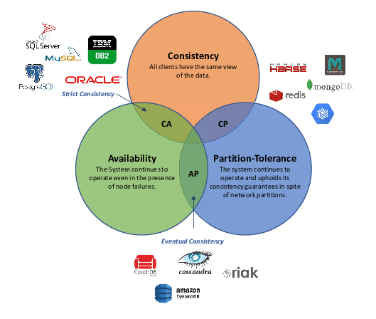
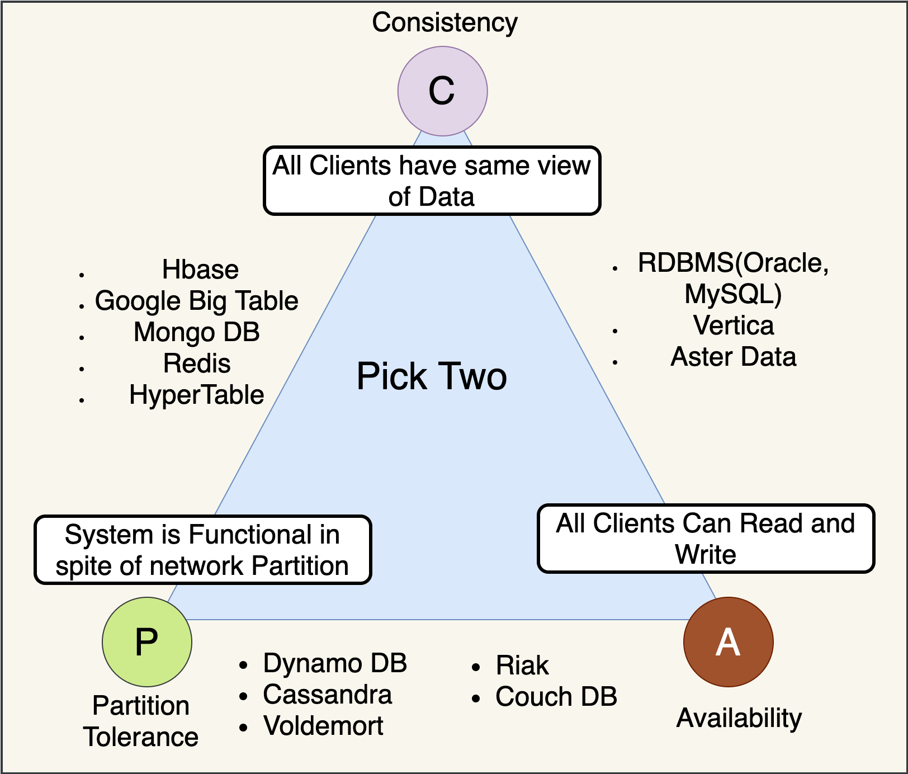
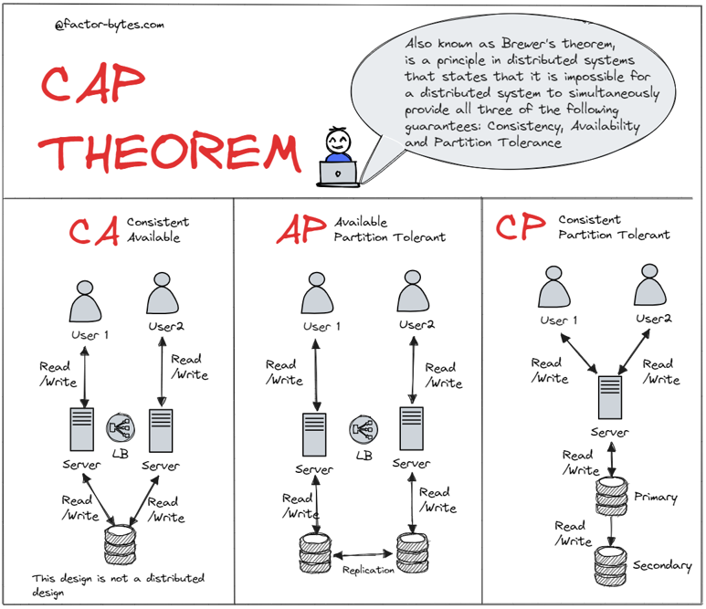
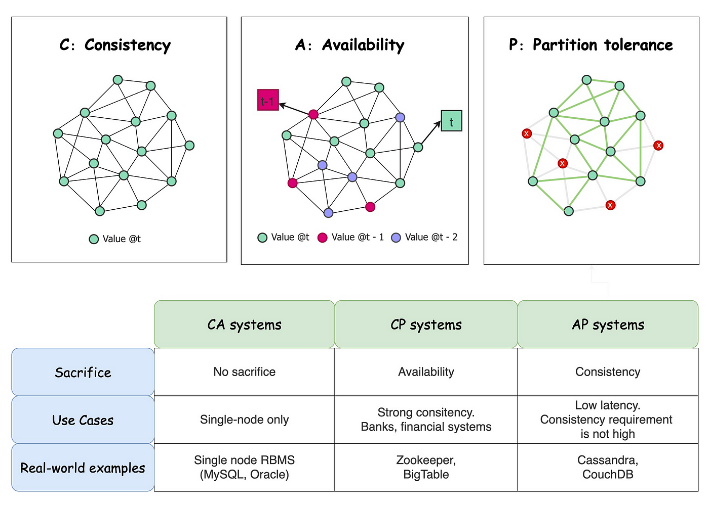
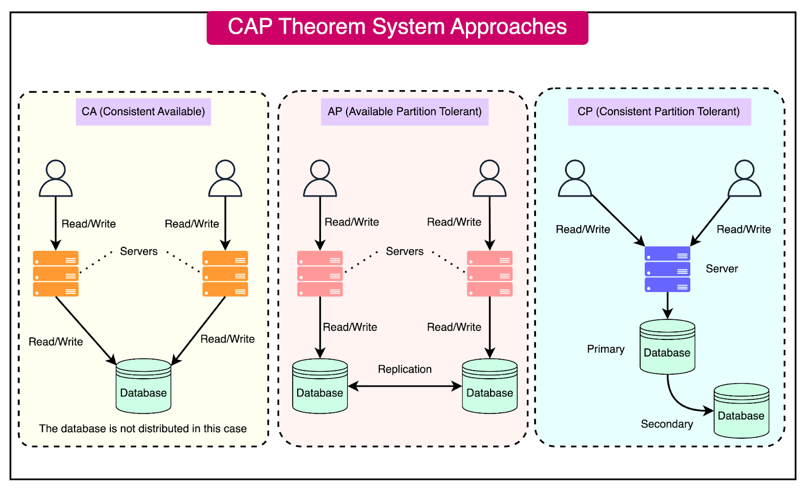
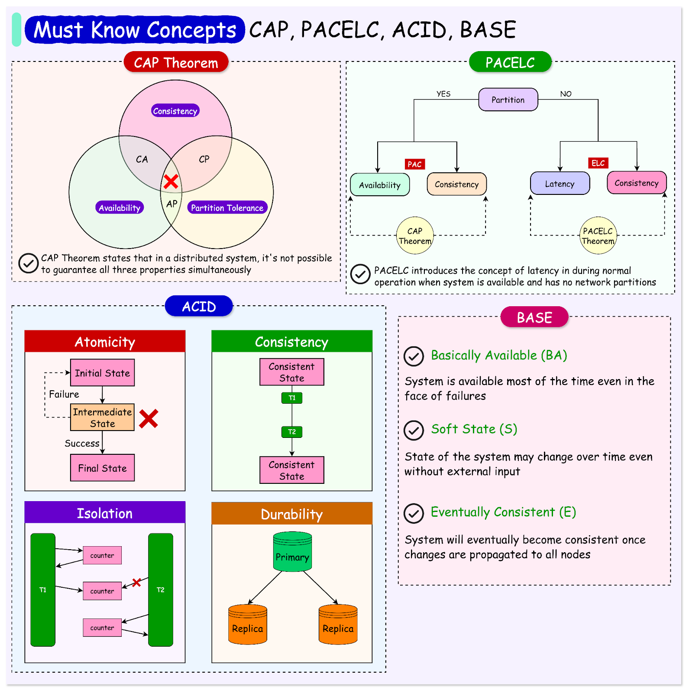

友情支持
如果您觉得这个笔记对您有所帮助，看在D瓜哥码这么多字的辛苦上，请友情支持一下，D瓜哥感激不尽，😜
|
|


有些打赏的朋友希望可以加个好友，欢迎关注D 瓜哥的微信公众号，这样就可以通过公众号的回复直接给我发信息。

公众号的微信号是: jikerizhi。因为众所周知的原因，有时图片加载不出来。 如果图片加载不出来可以直接通过搜索微信号来查找我的公众号。 |
2. CAP 理论

| 图片可以再丰富一下，把各种协议的代表产品写出来。例如像下图： |





